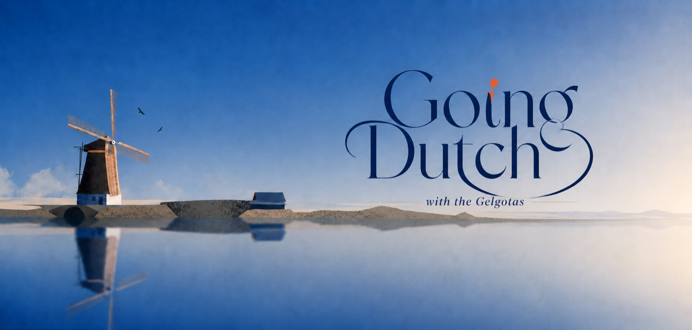

A letter from Tulp de Gid 🌷
Lieve Geltovas, this was a week where the young people walked out of class, the bus drivers walked off the job, and winter finally walked in, all more or less on schedule. Even the football found a way to be dramatic without anyone actually losing. Put the kettle on, my dears, and let me walk you through it.
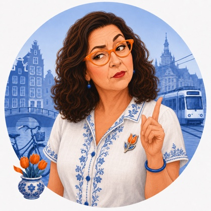
The big storyThe students who walked out before anyone had even asked them to serve
On Friday the 20th of November, school and university students in at least sixteen Dutch cities walked out of class at one o'clock in the afternoon, part of an international day of protest that also reached Germany, Portugal and France. More than sixty schools and universities took part, organized by a group called Stop de Oorlogskoorts, Stop the War Fever, together with the national student union LSVb. Their three demands were plain: no return of military conscription, no Ministry of Defense recruiting on school grounds, and government money spent on young people's futures rather than on weapons.
Nobody has actually been drafted. The government has only said, back in March, that it hopes to avoid bringing back compulsory service but cannot rule it out, which is exactly the kind of maybe that makes eighteen year olds nervous enough to skip class over it. The student union's complaint was as much about money as about soldiers: it points to roughly two hundred sixty million euros a year spent recruiting through schools and online ads, and a Ministry of Defense innovation center that already sits on the TU Delft campus. It is the first real look at the country Amellia will grow up asking questions about.
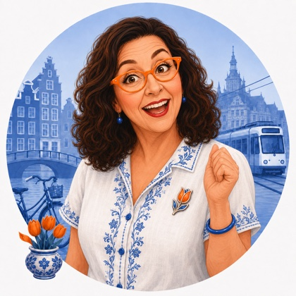
A few quick things, told quickly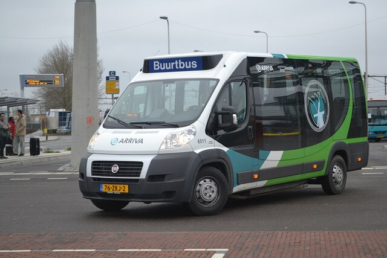
The regional buses stopped running on purpose, for the second day running
About thirteen thousand regional bus and train workers, mostly at Arriva, Transdev, EBS and RET's regional arm, walked off the job on Monday and again on Tuesday this week, after contract talks collapsed last month. Unions FNV and CNV have already pencilled in more strike days for the 3rd and 4th of December, then the 14th, 15th and 18th, if this week's action does not get them a new deal. NS trains and the big city networks (GVB, RET, HTM) are under separate contracts and kept running.
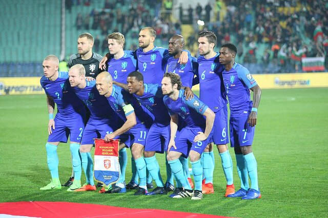
Oranje drew the one team holding the trophy already
Friday's draw in Nyon sent the Netherlands into the Nations League quarterfinals against Portugal, the defending champion, with the Dutch playing host first on the 27th of March and traveling to Portugal for the return leg on the 30th. Head coach Xavi Hernandez called it "a very good test," saying the team now knows what it takes against the continent's biggest names after last week's rough night in Germany.
Winter sent its first flakes ahead of schedule, right on schedule
The season's first snow fell around Eindhoven on Monday evening as fog turned to snow, with wet snow further north overnight. Weeronline said the timing was entirely typical, since the Netherlands usually sees its first wintry precipitation in the second half of November. The KNMI issued a code yellow for icy roads on Tuesday morning, salt trucks went out overnight, and fog at both Eindhoven and Schiphol delayed and cancelled a handful of flights.
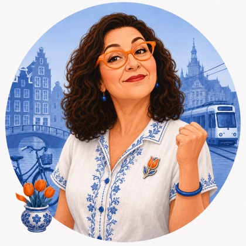
Dish of the week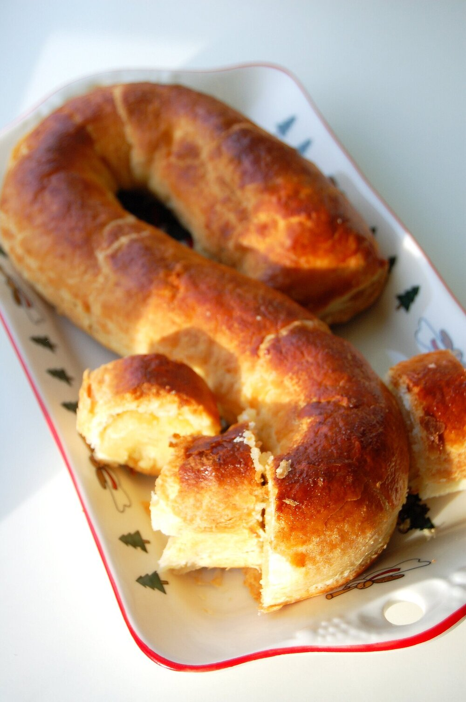
A letter you are meant to eat before you finish reading it
A banketstaaf is a log of puff pastry wrapped tightly around a dense, almond paste filling, glazed to a deep gold and traditionally baked around Sinterklaas and Christmas. Cut the long version into pieces and everyone gets a slice of the same roll; shape it into a letter instead, usually the initial of whoever is getting it, and it becomes a banketletter, the single-serving version that turns up under wrapping paper on the 5th of December. Either way it is eaten the same day it is cut, while the pastry is still faintly warm and the almond filling has not had time to dry out.
🌷 Tulp's Dutch Calendar Radar
Two dates worth circling before my next letter reaches you
Pakjesavond, the night of presents, is now only eleven days off, falling on Saturday the 5th of December. Every household with children (and most without) will spend the days before it quietly wrapping, disguising and writing the rhyming notes that go with each gift, more on that tradition just below.
And if you are relying on a regional bus or train anywhere outside the big cities, mark the 3rd and 4th of December, then the 14th, 15th and 18th, as the unions' next planned strike dates. NS and the city networks should run as normal; the regional lines may not.
Artwork of the week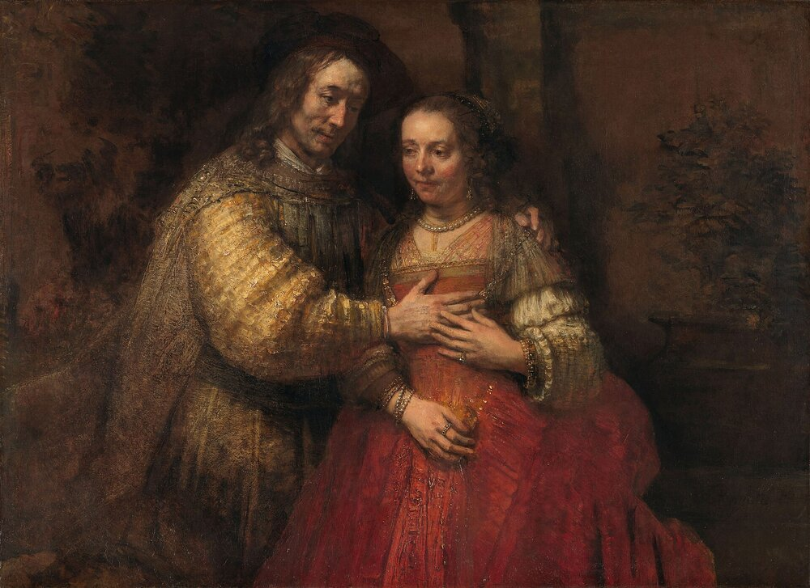
The painting Van Gogh said he would trade ten years of his life to sit in front of
Nobody is entirely sure who these two people are. The painting shows a man resting his hand gently on a woman's chest as she looks down, both dressed in rich, old fashioned costume, and for two centuries it was assumed to show the biblical couple Isaac and Rebecca. Most historians now think Rembrandt simply dressed up a real, contemporary Amsterdam couple in borrowed finery for their own private portrait, which only makes the tenderness in it feel more ordinary and more real.
Vincent van Gogh saw it at the Rijksmuseum in 1885 and reportedly said he would give ten years of his life to sit in front of it for a fortnight with only a dry crust of bread to eat. You will be able to go and look at it for free, any afternoon you like, once you are all here.
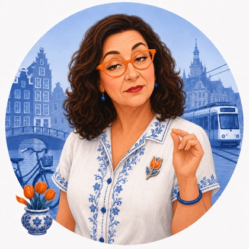
The Hague & Scheveningen dispatch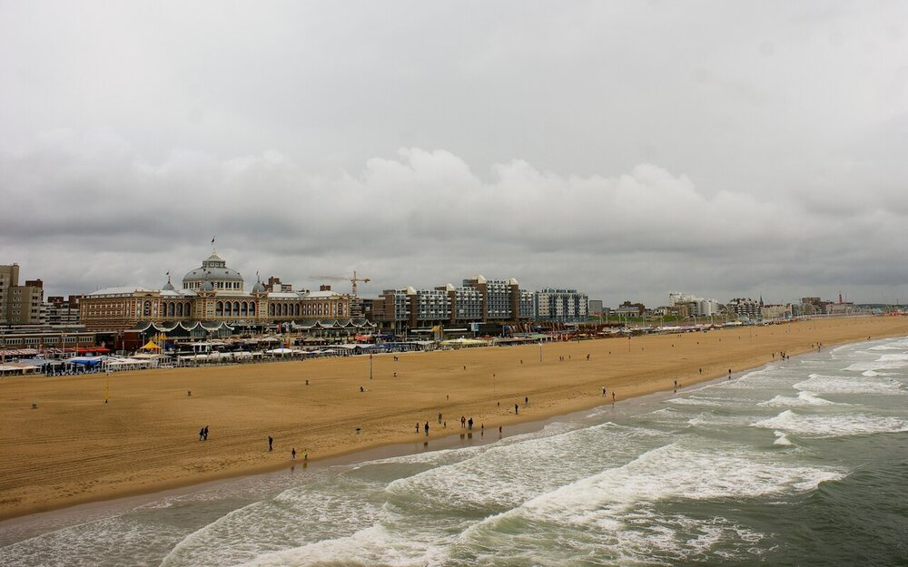
Your beach started life as one man's wooden shed
Everything along that boulevard, the hotels, the pier, the whole idea of Scheveningen as somewhere people go on purpose, traces back to 1818, when a local man named Jacob Pronk built a small wooden bathhouse with four tiny bathing rooms right on the sand. Fourteen hundred people paid to use it in its first year, nineteen hundred in its second, and within a few years the town had bought him out and built a proper municipal bathhouse in stone. It made Scheveningen the first seaside resort in the entire country, years before Zandvoort or any of its rivals existed.
Two hundred and eight years later, the same stretch of sand is gearing up for its winter season: the ice rink in front of the Kurhaus has been open since the 7th of November and runs through the end of February, and the boulevard's Royal Winter program, lights, a tuk-tuk ride along the Pier, and family afternoons at the end of December, starts properly on the 4th. The whole thing will be a short walk from the family's own front door.
"Heb je al een gedicht geschreven?" (Have you written a poem yet?)
"Dat gedicht was wel heel gemeen." (That poem was really mean.)
And a glance, before I let you go, at what this little family of ours is up to.
🌷 Tulp's question for the table
If you each had to write one short, teasing, affectionate line about another person at this table, the way a Sinterklaas poem does, who would you write it for, and what would the one line be about?
That is the letter, my dears. Students by the thousands skipping class before anyone has actually asked them to serve, the regional buses sitting still for the second day running, the first snow of the year landing right on schedule near Eindhoven, and a football team drawing the one opponent already holding the trophy.
Enjoy your call this Thursday, 18:30 here, 12:30 in Atlanta, 09:30 in Portland, the same nine hour gap as last week.
Tot snel, which just means see you soon. Liefs, Tulp.
Liefs, Tulp 🌷Tulp's parting shot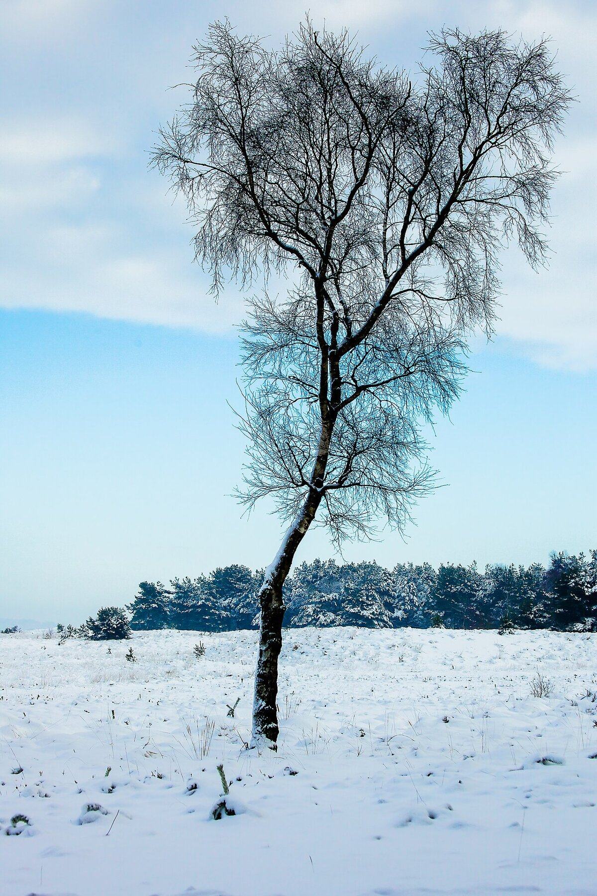
And here is where I will leave you: one bare tree holding its ground in a field gone white overnight, the kind of quiet the Dutch countryside keeps in reserve for exactly this time of year.